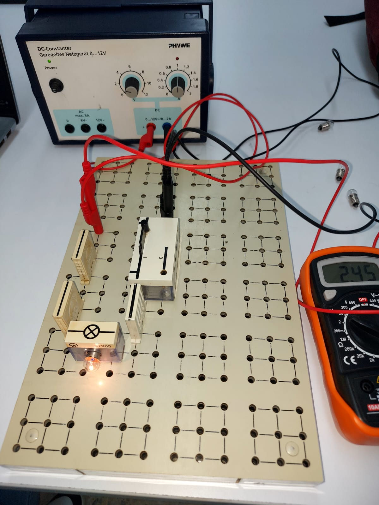
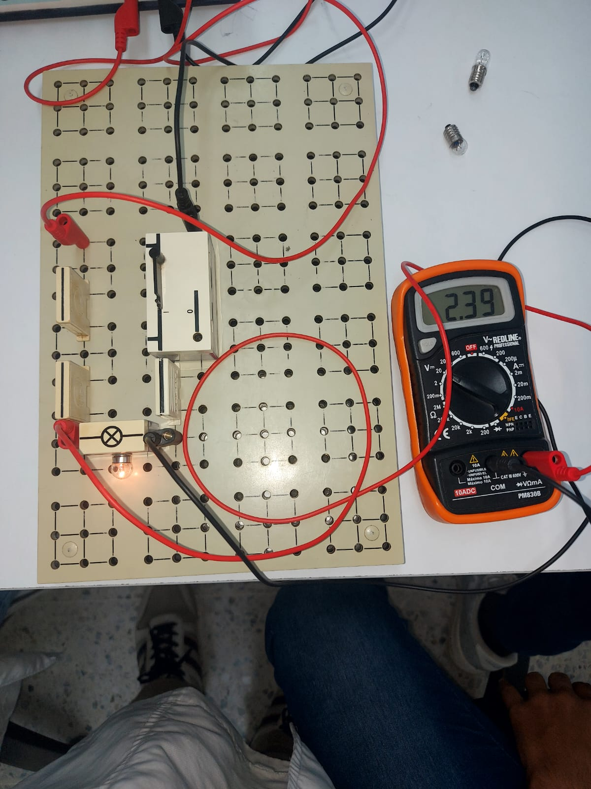
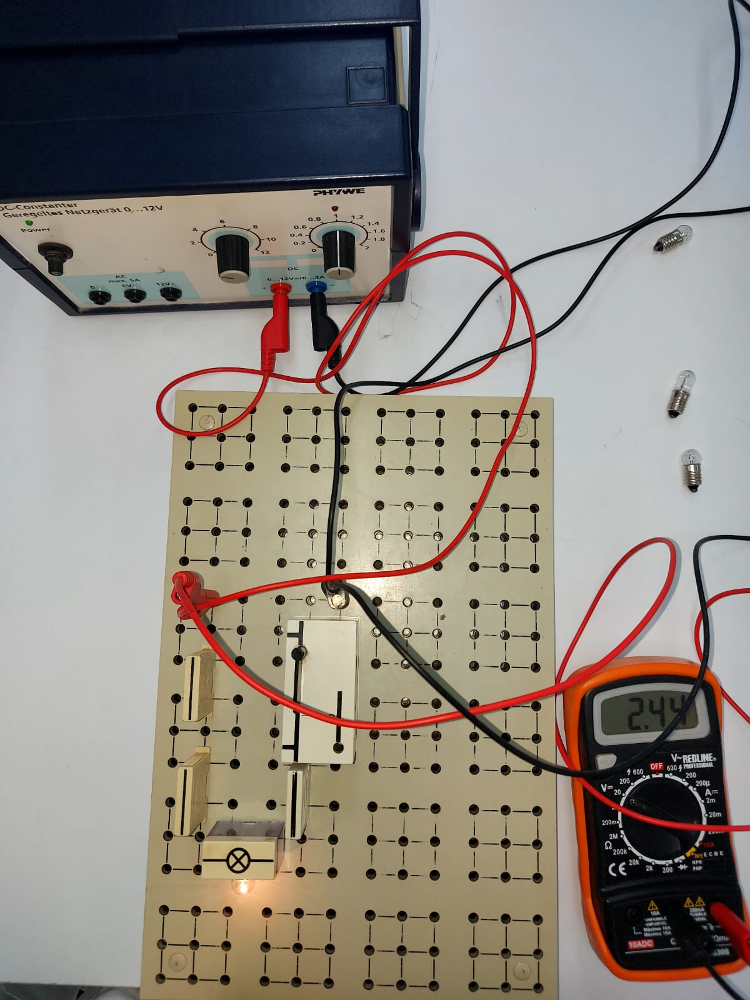
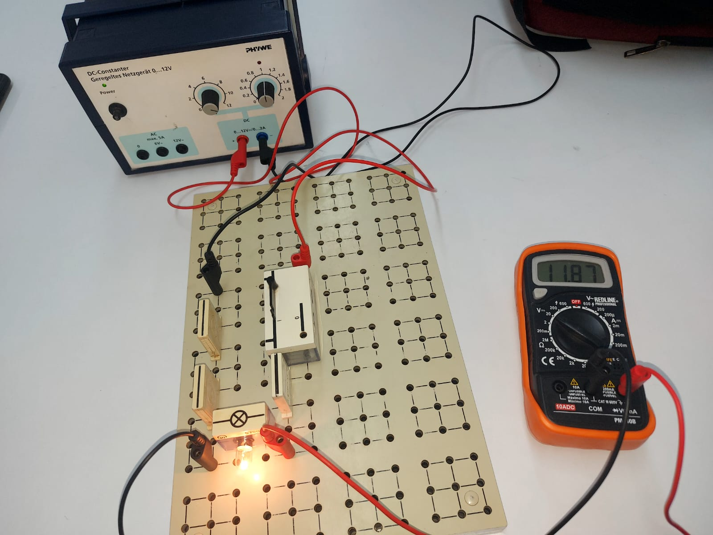
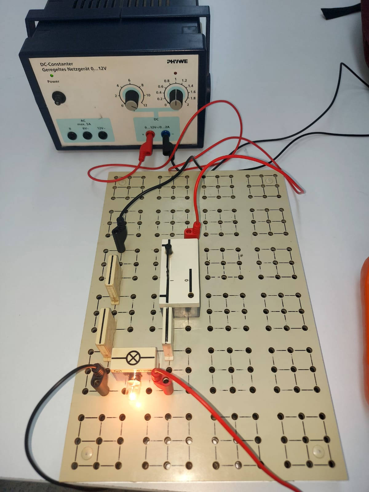
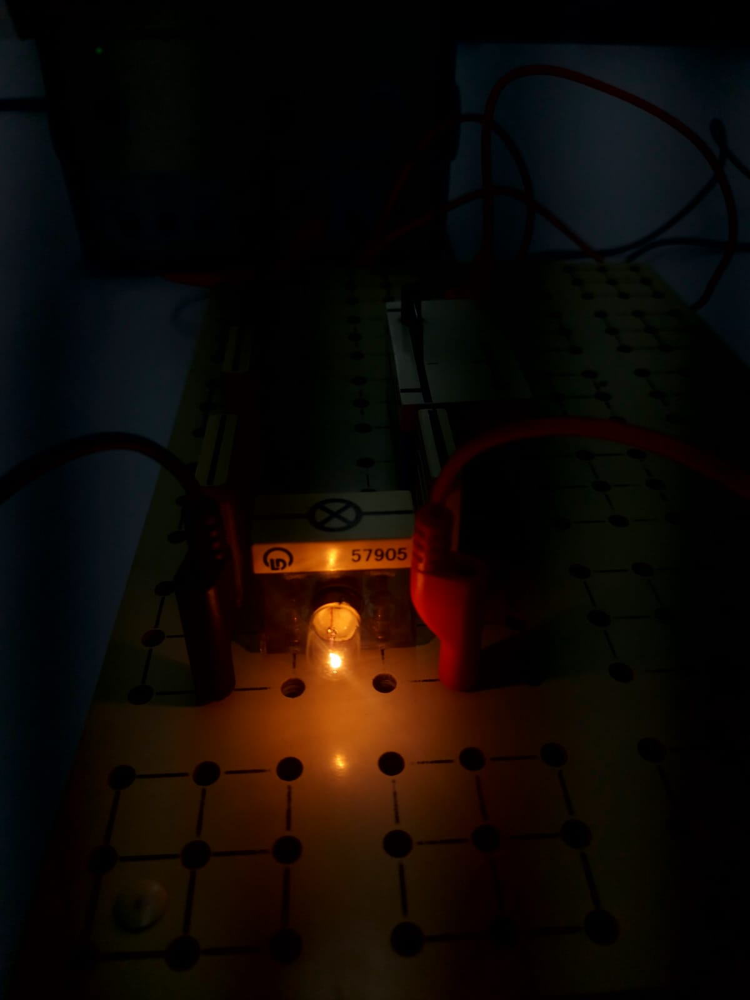
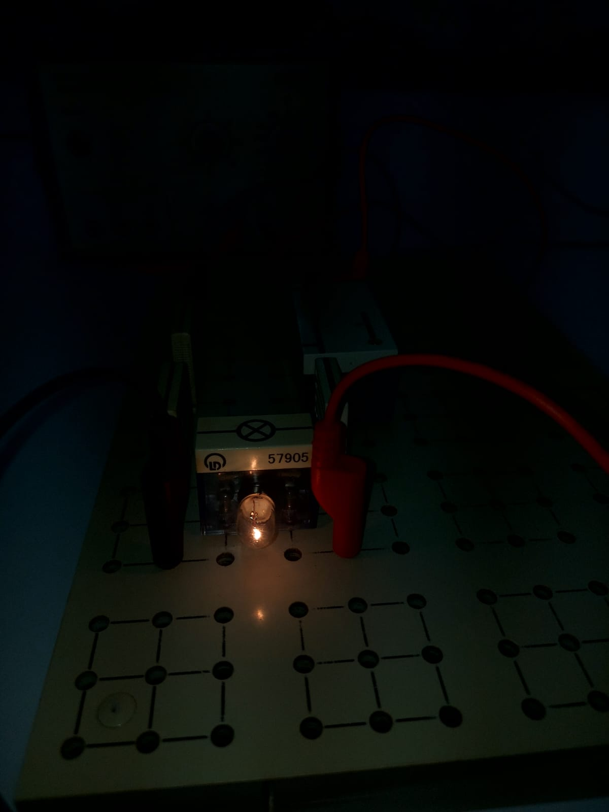

MEDIDA DE TENSIÓN: Tensión nominal y Tensión de funcionamiento
Objetivos
- Medir la tensión correctamente, utilizando el multímetro en la posición de voltímetro.
- Utilizar la escala apropiada del voltímetro cuando se vayan a medir tensiones.
- Ajustar la tensión de funcionamiento de las lámparas utilizando el voltímetro y conociendo la tensión nominal.
Materiales a usar
| Materiales | Cantidad |
|---|---|
| Panel de montajes | 1 |
| Interruptor | 1 |
| Portalámparas | 1 |
| Lámpara | - |
| Cables de conexión | 4 |
| Conectores | 10 |
| Fuente de voltaje | 1 |
| Multímetro Digital | 1 |
Montaje y procedimiento
- Monta el circuito según el esquema de la figura 1. Verifica los valores nominales de las lámparas a usar y anótalos en la tabla 1.
- Con la fuente apagada, coloca en el portalámparas la lámpara a estudiar (preferiblemente la de menor voltaje).
- Con el interruptor abierto, enciende la fuente y con ayuda del voltímetro, ajusta la fuente al valor del voltaje nominal de la lámpara (si no es posible, toma un valor cercano), reportar este valor en la segunda columna de la tabla 1.
- Abrir el interruptor y vuelve a calibrar el valor de la fuente; a veces el valor del voltaje de la fuente cae al cerrar el interruptor.
- Mide el voltaje que le llega a la lámpara y repórtalo en la tercera columna de la tabla 1; observa el brillo de la lámpara y haz la respectiva anotación.
- Baja el voltaje de la fuente, observa el brillo de la lámpara y realiza la correspondiente anotación.
Tabla 1. Medidas de tensión
| Referencia nominal de la lámpara | Tensión de la fuente (V) | Tensión de funcionamiento (V) |
|---|
Evidencias







Evaluación
- ¿Qué se debe tener en cuenta al conectar un aparato eléctrico a una fuente de corriente?
- ¿Qué se necesita cuando se quiere ajustar una tensión exacta a un circuito?
- ¿Cómo se denomina el tipo de conexión del voltímetro? ¿Por qué se utiliza esta conexión en particular para este caso?
- ¿Hay diferencias entre el voltaje de la fuente y el voltaje que le llega a la lámpara? Si su respuesta es afirmativa, dé una explicación.
Resultados
×